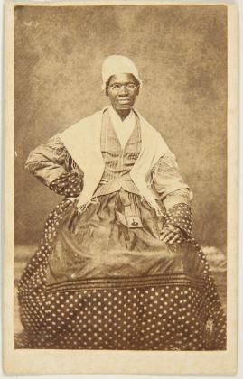

Akron is the fifth-largest city in Ohio and is the county seat of Summit County. It is located on the western edge of the Glaciated Allegheny Plateau, approximately 39 miles (63 km) south of Lake Erie. Co-founded along the Little Cuyahoga River in 1825 by Simon Perkins and Paul Williams, it was done so being a strategic point at the summit of the developing Ohio and Erie Canal.

Akron became a manufacturing center owing to its location on the canal, as well as being connected to numerous others and railroad lines. Many industries in the United States either began or were influenced by the city. After beginning the tire and rubber industry during the 20th century with the founding of Goodrich, Firestone, General Tire, also the Goodyear merger with The Kelly-Springfield Tire Company gained the status of, "Rubber Capital of the World".

Notable historical events that occurred in the city include Sojourner Truth's "Ain't I A Woman?" speech delivered extemporaneously during the 1851 Women's Convention. While visiting during August 1914, Marcus Garvey founded the Universal Negro Improvement Association (UNIA). In 1883, a local journalist began the modern toy industry by founding the Akron Toy Company. Ferdinand Schumacher, a German immigrant, was one of the founders of Quaker Oats and had a mill in downtown Akron.
The city was a stop on the Underground Railroad, and saw abolitionist John Brown as a resident with his house now as a landmark. The city was also part of the country's largest local chapter of the Ku Klux Klan having many city officials as members which Wendell Willkie successfully opposed before becoming the 1940 Republican nominee for President.